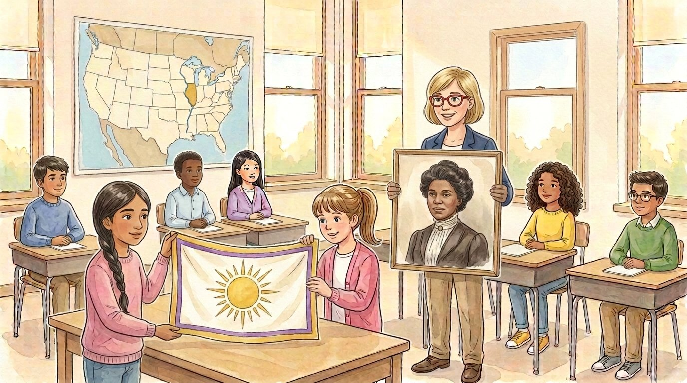

Grade 8 · Social studies · SS.6-8.CV.3.MdC
The ballot that crossed the Mississippi
A story about a vote in Springfield in June 1913, a journalist who refused to march at the back, and a right that was won one step at a time.
El voto que cruzó el Misisipi. Un cuento sobre una votación en Springfield en junio de 1913, una periodista que se negó a marchar al final y un derecho que se conquistó paso a paso.
Social studies words you will learn
Tap a green word to see what it means.
Toca una palabra verde para ver qué significa. Con la ayuda activada, verás también la definición en español.
The story
El cuento está en inglés. Pulsa «Listen to the story» para escucharlo y toca las palabras verdes cuando no entiendas una.
Athena and Salma unrolled a banner they had painted in art class: VOTES FOR WOMEN. "A hundred years ago, women in most of the country couldn't vote," said Ms. Novak. "The fight for women's , the right to vote, took more than seventy years. And Illinois took a big step in 1913."
"On June 26, 1913, the governor of Illinois signed a law that let women vote for president and for many local offices, like mayor and alderman," said Ms. Novak. "Illinois became the first state east of the Mississippi River where women could vote for president."
"Why only some offices?" asked Elías. "The Illinois constitution said that only men could vote for some state offices, like governor," said Ms. Novak. "Changing the constitution was very hard, so the won the offices that the legislature could change by law. That's called ." "Half a win is better than none," said Daniel.
Ms. Novak showed a portrait of a woman with a serious face. "This is Ida B. Wells-Barnett, a journalist who lived in Chicago," she said. "In January 1913, she founded the Alpha Suffrage Club, the first suffrage club for Black women in Chicago."
"In March 1913, Illinois suffragists traveled to Washington to march in a huge parade for women's suffrage," said Ms. Novak. "Some organizers wanted Black women to march at the back, to them. Ida B. Wells-Barnett refused." "What did she do?" asked Selena. "She waited along the street, and when the Illinois group passed, she stepped in and marched with them."
"Did the new law make a difference?" asked Israel. "A big one," said Ms. Novak. "Thousands of women in Illinois registered to vote. In Chicago, the Alpha Suffrage Club helped register Black women in the Second Ward, and in 1915 the ward elected Oscar De Priest, Chicago's first Black ."
"Illinois women kept working for a national law," said Ms. Novak. "In 1919, Illinois was one of the first states to ratify the , and in 1920 it became part of the Constitution: the right to vote cannot be denied because of sex."
Before the bell, the class hung the banner over the door. Sophia wrote in her notebook: Rights can be won step by step. Each step makes the next one possible, and some people have to fight to be included in the steps.
Pause to connect
Visual arts · VA:Cn11.1.8
Read the National Park Service article about Ida B. Wells-Barnett and the 1913 suffrage march.
Lee el artículo del Servicio de Parques Nacionales sobre Ida B. Wells-Barnett y la marcha por el sufragio de 1913.
A Noble Endeavor: Ida B. Wells-Barnett and Suffrage (National Park Service) (opens in a new tab)
What you will see: An article about Ida B. Wells-Barnett's work for the right to vote, with a historic portrait of her and the story of the March 1913 parade in Washington, D.C.
Lo que verás: Un artículo sobre el trabajo de Ida B. Wells-Barnett por el derecho al voto, con un retrato histórico de ella y la historia del desfile de marzo de 1913 en Washington, D. C.
- Look at the historic portrait. How did the photographer present Ida B. Wells-Barnett? What does her pose and expression tell you?Observa el retrato histórico. ¿Cómo presentó el fotógrafo a Ida B. Wells-Barnett? ¿Qué te dicen su postura y su expresión?
- Why do you think marching with the Illinois group mattered so much to her?¿Por qué crees que marchar con el grupo de Illinois era tan importante para ella?
Think about it, then answer in your notebook or talk it over with someone at home.
Check your thinking
Formal portraits of that time often showed people seated or standing straight, in their best clothes, with a serious expression, to show dignity and seriousness. For Ida B. Wells-Barnett, marching with the Illinois women showed that Black women were equal members of the movement, not followers at the back. Where you stand in a parade can be a message.
Glossary
- suffrage
- The right to vote.
- sufragio: El derecho a votar.
- suffragist
- A person who worked to win the right to vote, especially for women.
- sufragista: Una persona que trabajó para conseguir el derecho al voto, sobre todo para las mujeres.
- partial suffrage
- The right to vote in some elections but not in all of them.
- sufragio parcial: El derecho a votar en algunas elecciones, pero no en todas.
- segregate
- To separate people by race, often to treat one group unfairly.
- segregar: Separar a las personas por su raza, a menudo para tratar injustamente a un grupo.
- alderman
- A member of the Chicago City Council, elected by a ward.
- concejal (alderman): Un miembro del Concejo Municipal de Chicago, elegido por un distrito (ward).
- Nineteenth Amendment
- The 1920 amendment that says the right to vote can't be denied because of sex.
- Decimonovena Enmienda: La enmienda de 1920 que dice que no se puede negar el derecho al voto por razón de sexo.
Questions
Choose the correct answer. If you make a mistake, the story shows you where the answer is.
Elige la respuesta correcta. Si te equivocas, el cuento te muestra dónde está la respuesta.
-
Question A. What did the Illinois law of June 26, 1913, allow?
¿Qué permitía la ley de Illinois del 26 de junio de 1913?
The law let women vote for president and many local offices; Illinois was the first state east of the Mississippi to allow it.
-
Question B. Why could women vote for only some offices?
¿Por qué las mujeres solo podían votar para algunos cargos?
The state constitution said only men could vote for some offices, so suffragists won the offices the legislature could change by law.
-
Question C. What did Ida B. Wells-Barnett found in January 1913?
¿Qué fundó Ida B. Wells-Barnett en enero de 1913?
In January 1913, she founded the Alpha Suffrage Club.
-
Question D. What did Ida B. Wells-Barnett do at the 1913 march in Washington?
¿Qué hizo Ida B. Wells-Barnett en la marcha de 1913 en Washington?
When organizers wanted Black women at the back, she refused and joined the Illinois group as it passed.
-
Question E. What does the Nineteenth Amendment say?
¿Qué dice la Decimonovena Enmienda?
Ratified in 1920, it says the right to vote cannot be denied because of sex.
Challenge: explain your thinking
Explain how rights change
Make a timeline with three steps from the story: 1913 in Illinois, the 1913 march, and 1920. For each step, explain how people used a process, like a law, a protest or an amendment, to change who had the right to vote.
Explica cómo cambian los derechos. Haz una línea de tiempo con tres pasos del cuento: 1913 en Illinois, la marcha de 1913 y 1920. Para cada paso, explica cómo la gente usó un proceso, como una ley, una protesta o una enmienda, para cambiar quién tenía derecho a votar.
Answer in your notebook or talk it over with a classmate. Use evidence from the story.
Responde en tu cuaderno o coméntalo con un compañero. Usa evidencia del cuento.
Check your thinking
June 1913: suffragists persuaded the Illinois legislature to pass a law, partial suffrage, because changing the state constitution was harder. March 1913: suffragists marched in Washington to pressure the nation, and Ida B. Wells-Barnett protested segregation by marching with her state. 1920: the Nineteenth Amendment, approved by Congress and ratified by the states, protected the right to vote nationwide. Laws, protests and amendments worked together.
Go further
In July 2018, Chicago renamed a downtown street to honor Ida B. Wells. Find out which street it is and why the city chose to honor her.
Para ir más lejos. En julio de 2018, Chicago le cambió el nombre a una calle del centro en honor a Ida B. Wells. Averigua qué calle es y por qué la ciudad decidió honrarla.
Check your thinking
Congress Parkway became Ida B. Wells Drive, the first downtown street in Chicago named after a Black woman. The city honored her work as a journalist who exposed lynching, her fight for the right to vote and her leadership in Chicago's community.